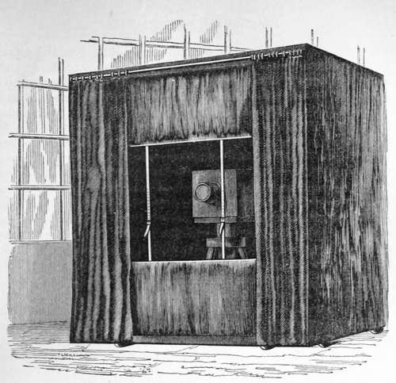

Chapter I. Selection Of Paper For Photographic Purposes
Description
This section is from the book "A Manual Of Photography", by Robert Hunt. Also available from Amazon: A Manual of Photography.
Chapter I. Selection Of Paper For Photographic Purposes
It is natural to suppose, that a process which involves the most delicate chemical changes requires more than ordinary care in the selection of the substance upon which preparations of a photographic character are to be spread. This becomes the more evident as we proceed in our experiments to produce increased conditions of sensitiveness. As the material, whatever it may be, is rendered more susceptible of change under solar influence, the greater is the difficulty of producing perfectly uniform surfaces, and with paper this is more particularly experienced than with either metal or glass plates. Paper is, however, so convenient and so economical, that it is of the first importance to overcome the difficulties which stand in the way of its use, as the tablet on which the photographic picture is to be delineated.
The principal difficulty we have to contend with in using paper is, the different rates of imbibition which we often meet with in different parts of the same sheet, arising from trifling inequalities in its texture and unequal sizing. This is, to a certain extent, to be overcome by a very careful examination of each sheet by the light of a lamp or candle at night. By extending the paper between the light and the eye, and slowly moving it up and down, and from left to right, the variations in its texture will be seen by the different quantities of light which permeate it; and it is always the safest course to reject every sheet in which any inequalities are detected. By day it is more difficult to do this than at night, owing to the interference of the reflected with the transmitted light. It will, however, often happen that paper which has been carefully selected by the above means will imbibe fluids unequally. In all cases where the paper is to be soaked in saline solutions, we have another method of discovering those sources of annoyance. Having the solution in a broad shallow vessel, extend the paper, and gradually draw it over the surface of the fluid, taking care that it is wetted on one side only. A few trials will render this perfectly easy. As the fluid is absorbed, any irregularities are detected by the difference of appearance exhibited on the upper part, which will, over well-defined spaces, remain of a dull-white, whilst other portions will be shining with a reflective film of moisture. Where the importance of the use to which the paper is to be applied,—as, for instance, to copying an elaborate piece of architecture, or for receiving the portrait of an individual—will repay a little extra attention, it is recommended that the paper be tried by this test with pure water, and dried, before it is submitted to the salting operation. It will be sometimes found that the paper contains minute fibres of thread, arising from the mass of which it is formed not having been reduced to a perfect pulp. Such paper should be rejected, and so also should those kinds which are found to have many brown or black specks, as they materially interfere with some of the processes. Many of the spots in paper are formed by particles of brass wire which have separated from the machinery employed in its manufacture, or they may be fragments of buttons derived from the rags, and minutely divided in pulping. Some specimens of paper have an artificial substance given to them by sulphate of lime (plaster of Paris) ; but, as these are generally the cheaper kinds of demy, they are to be avoided by purchasing the better sorts. The plaster can be detected by fusing a sheet of the paper and examining the quantity of ash. Pure paper leaves less than 1/2 per cent, of ash. If plaster is present the ash will be much more considerable : the increase of weight is, however, sometimes due to kaolin. No really sensitive photographic paper can be prepared when sulphate of lime is present; and it has the singular property of reversing the action of the Iodides on the darkened chloride of silver, producing a negative in the place of a positive photograph. It is the custom for paper-makers to fix their names and the date on one leaf of the sheet of writing paper. It is wise to reject this leaf, or to select paper which is not so marked, as in many of the photographic processes which will be described, these marks are brought out in most annoying distinctness. From the various kinds of size which the manufacturers use in their papers, it will be found that constantly varying effects will arise. A well-sized paper is by no means objectionable; on the contrary, organic combinations exalt the darkening property of the nitrate and chloride of silver. But unless we are careful always to use the same variety of paper for the same purpose, we shall be much perplexed by the constantly varying results which we shall obtain. No doubt, with the advancing importance of the art, the demand for paper for photographic purposes will increase ; manufacturers will then find it worth the necessary care to prepare paper agreeably to the directions of scientific men. Several of our paper-makers are now paying much attention to the preparation of photographic paper, and are considerably improving it. I have been most obligingly furnished by Mr. Sandford, of Paternoster Row, with specimens of a great variety of Foreign and English papers, and from the care that gentleman is bestowing on this subject, the most important advantages may be expected. All who desire to make any progress in photography must take the necessary precautions, or be content to meet with repeated failures.
The photographic peculiarities of paper mainly depend upon the sizes employed. The English paper manufacturers very commonly employ gelatine, and this in very different conditions. The French, on the contrary, use starch, and this, from the strong affinity existing between starch and iodine, appears to be one reason why the French paper is superior for the calotype in some of its modifications.
Continue to:
- prev: On Lenses For The Photographic Camera. Part 3
- Table of Contents
- next: Selection Of Paper For Photographic Purposes. Part 2